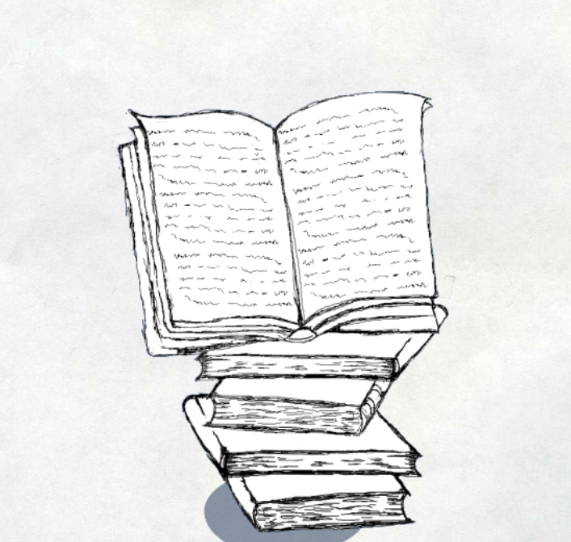

判 | 斯人若废柴，此后不得有

今晚整理柜子发现有三本借来的书还没还，明天得跑一趟图书馆赶紧还掉，这三本是我曾在某校图书馆极其匮乏的安全专题一栏中精挑细选出来的，实际上只粗略看完了其中一本，占用了这么久的资源，罪过罪过。现在是数字时代，无纸化学习可谓是潮流，又何况学计算机的，离了电脑可还行。可惜我崇尚朴素主义，即用最原始的纸质化学习才能进入所谓的”心流“，一开电子产品就容易浮躁，补充一点，斯人自诊断患有电子产品综合征，具体症状表现为长时间盯电子屏幕后会直接错影看不清一切字符，无论是电子产品上的还是书上的字符，通通看不清，堪称“有眼如盲”，年纪轻轻就变成时代老人了，罪加一等。管他何种学习主义，能学到东西就好，能做到充分利用资源不浪费，真乃强者。我得审判自己了，资源一旦到手，就懒惰起来了，rss未读文章已超出二百，又买了几本书，诸多技术资源，一不烧香供奉，二不列柜珍藏，三定判为废柴，一级惭愧，该及时打住，自明日起，改邪归正，再次简化一切资源，闭住嘴，翻开本，看它！
2024-1-27：摘自cloudsky的飞花堂：
我一直都希望大家从这里学到的不是技术本身，而是学习方法和一种不再狂热的淡然。很多技术，明天就会过时，如果你掌握的是学习方法，那你还有下一个机会，如果你掌握的仅仅是这个技术本身，你就没有机会了。